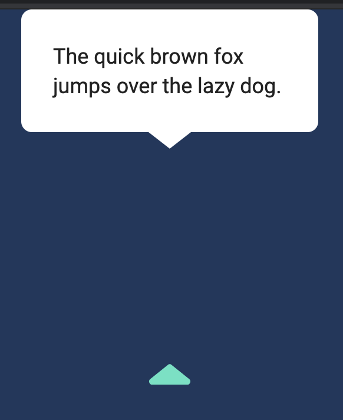
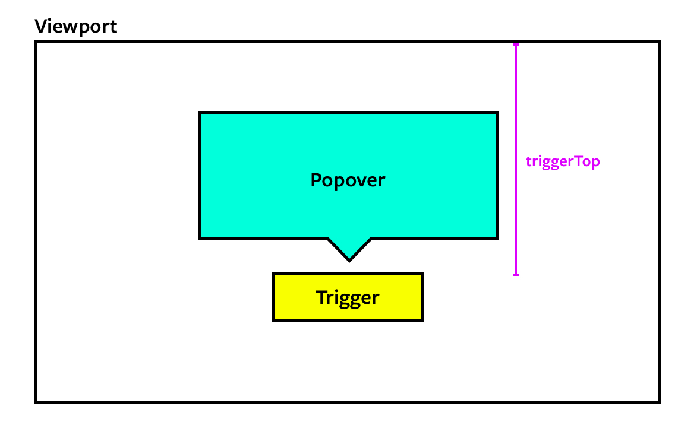
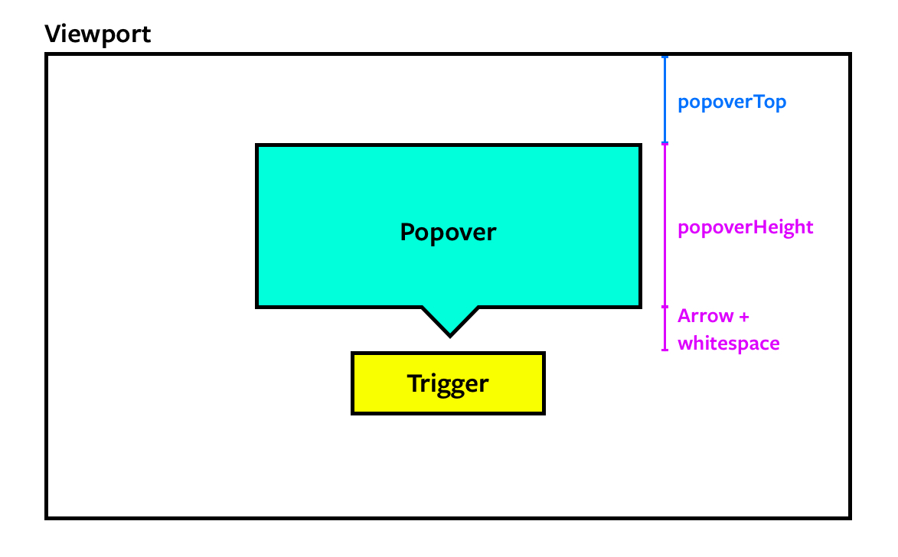

Popovers should appear above all other elements. This means popovers must be a direct descendant of the <body> element. If popovers are placed inside another element, they may get cut off when an ancestor element uses transform or overflow.
<body>
<!-- other elements -->
<div class="popover">
<p>The quick brown fox jumps over the lazy dog</p>
</div>
</body>
The popover needs to know the direction they should appear. We can use a custom attribute for this. Let’s call this custom attribute data-position.
<div class="popover" data-position="top">
<p>The quick brown fox jumps over the lazy dog</p>
</div>
The top popover should appear above the top trigger as shown in the picture below.
We can only achieve such a precise positioning by setting position to absolute. Since position is absolute, we need to provide the correct top and left values.
We can set the left position with the style property.
popover.style.left = `${leftPosition}px`

Next, we want to find the top position.
Calculating popover’s top position
To calculate the popover’s top position, we first need to find the trigger’s top position.

Getting the trigger's top value
We can get this value from getBoundingClientRect.
const triggerTop = popoverTriggerRect.top
The trigger’s top value is equal to the sum of the popover’s top value, the popover’s height, and some breathing space.

Calculating the popover's top value
Let’s say the space is 20px.
const space = 20
We can get the popover’s height from popoverRect.
const topPosition = triggerTop - popoverRect.height - space
We will then set the top position with the style property.
popover.style.top = `${topPosition}px`
Hiding the popover
The popover should be hidden at first. We can hide the popover by adding the hidden attribute. Make sure you add this hidden attribute after positioning the popover.
If event.target does not originate from within .popover or .popover-trigger, we know the user has clicked outside both the popover trigger and the popover.